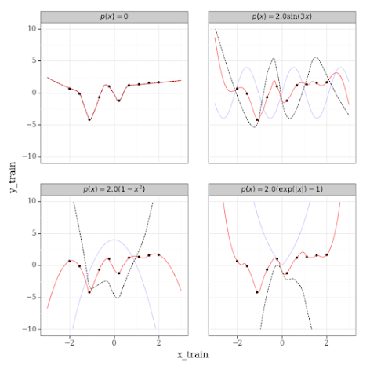

Publications
All the links you could want
Mathematics of Public Health Book Chapter: Learning COVID-19 Mitigation Strategies using Reinforcement Learning
A novel ABM-RL-based modelling approach for learning and analyzing pandemic mitigation strategies using Ontario, Canada epidemiological, socioeconomic, health, and social data. This book chapter provides a unqiue approach to modelling pandemic outcomes as by providing agents the freedom to select their actions and learn from their experiences, RL allows agents to learn behavioural policies that reduce the spread of COVID-19.Alexander El-Hajj
Mathematics of Public Health Book Chapter
[Google Books link]
Association between Food Insecurity and Stressful Life Events among Canadian Adults
 This study investigates the extent to which stressful life events may increase the likelihood of food insecurity among the Canadian adult population.
Those who experienced work and health-related stressful life events were significantly more likely to be exposed to food insecurity.
This study investigates the extent to which stressful life events may increase the likelihood of food insecurity among the Canadian adult population.
Those who experienced work and health-related stressful life events were significantly more likely to be exposed to food insecurity.
Alexander El-Hajj, Emmanuel Benhin
Longitudinal and International Study of Adults Research Paper Series
[Paper]
Validation of the Food Security Module in the 2018 Longitudinal and International Study of Adults
 This technical report is intended to validate the Longitudinal and International Study of Adults (LISA) Wave 4 (2018) Food Security (FSC) module and provide recommendations for analytical use.Alexander El-Hajj, Emmanuel Benhin
Longitudinal and International Study of Adults Research Paper Series
[Website]